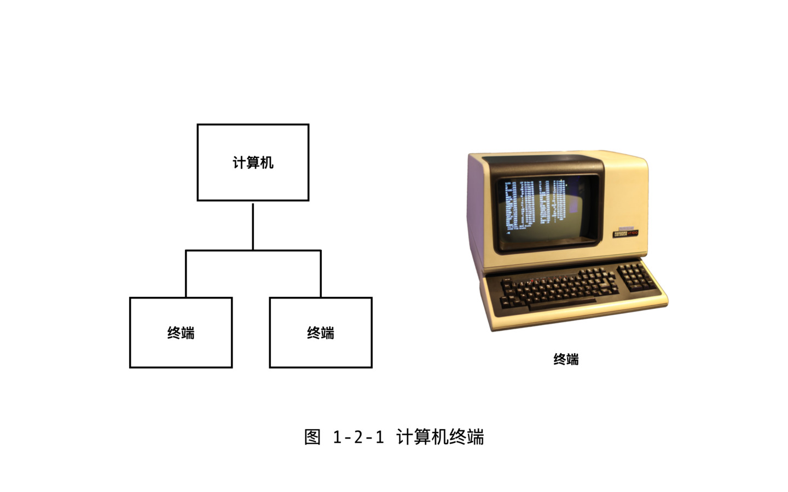
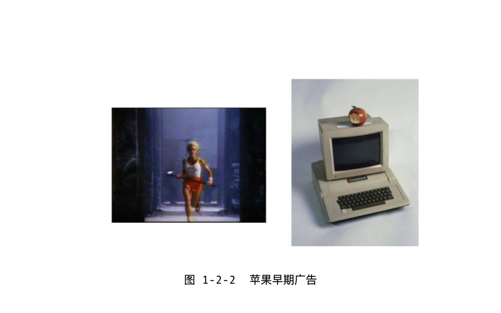
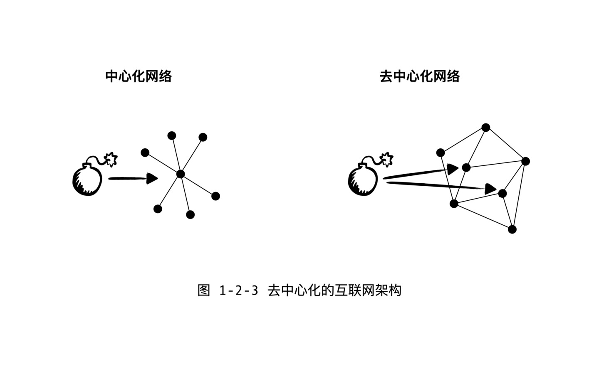

Web3.0 是支持个体崛起的革命。一切的革命都要经历一个量变到质变的过程，所以咱们来回顾过去几十年，看看硬件角度，个体是不是逐渐的获得了越来越多的硬件资源呢？
PC 革命
我们先回到几十年前，聊聊个人计算机（ PC ）革命。
最早的计算机都是体型庞大，人们靠终端连接上去使用。而且早期的计算机都非常贵，一个科研机构和学校一般都只是配一台或者几台，而通常一台计算机就要几乎占满一整间屋子。我们比较熟悉的号称第一台真正的电子计算机的埃尼阿克，是 1945 年发明的[1]。这个时期，使用者要通过连接线把计算机和放在办公区域的终端连接起来使用。

注意，这里的”终端“是一个术语，英文叫 Terminal 。早期，一个终端由一个键盘加一个打印机组成，后来的终端由一个键盘和一个显示器组成，外观上很像一台我们今天使用的计算机。但是实际上，终端本身是很傻的，计算机应有的存储和运算的功能都是在主机中完成的。一个计算机上可以连接多个终端。今天使用 Linux 系统或者是苹果的 Mac 系统的朋友，依然会用到名为”终端“的一个软件，就是延续了这个传统，但是现在的终端，全称叫做”虚拟终端“，因为只是一个软件，每次多打开一个终端，也只不过是多开了一个窗口，并不需要多购买一套键盘和显示器了。
早期昂贵的硬件造成了硬件资源是比较中心化的，因为个人不可能负担昂贵的硬件成本。如果一个程序员想要搞点创新，还是需要专门报告给领导同意才能使用计算机的。例如 Email 之父汤姆林森，最早给朋友介绍电子邮件系统的时候，都要跟朋友们说，这个是我自己偷偷做的，最好不要让领导知道。

PC 革命终究还是发生了。1975 年，美国的家酿计算机俱乐部（ Homebrew Computer Club )成立。很多人开始用自己家附近的商店可以买到的电子器件，通过在电路板上焊接元器件的方式，组装自己的计算机。1976 年，苹果的联合创始人沃兹尼亚克展示了他的 Apple I 机器。之后不久，沃兹尼亚克的合伙人乔布斯决定要售卖组装好的苹果计算机，个人计算机的时代慢慢到来了。也是在 1976 年，比尔盖茨给这个俱乐部写了一封《致计算机爱好者的公开信》（ Open Letter To Hobbist ）。提出了软件版权保护的思想。微软公司在之前一年的 1975 年创建，愿景是把个人电脑放到了每个人的桌子上。之后的故事，都是我们大部分人亲历的历史了。
Internet 的诞生
计算机提供的是运算和存储能力，但是个人拥有的计算能力中还必须包含另外一项，那就是带宽。也就是说我和我的朋友之间，要有安全和高速的网络连接。

Internet 是 1970 年代发明的。计算机网络先驱们构想了一个如何能够对抗核爆炸的去中心化的网络。
计算机会把信息打包成很多小信息块，然后尽快的往任意的方向发出去，收到信息块的计算机会帮忙继续传递。Internet 不受任何人控制，或者说是属于所有人的。互联网是由很多很多独立的网络互相连通组成的。它最有意思的特点是，完全去中心化的，并没有一个中央集权，去决定信息块应该如何发送，最终只要达成，任何两个设备之间都可以实现信息连通就可以了。
最早出现的是公司私有网络。比起一台计算机，铺设通信网络的费用不是个人能够承担的。最早的计算机网络，是科研机构的内网，例如，能让一名员工从三楼访问四楼同事的机器。最终，跨国公司构建了全球范围内的私有网络。单一公司控制的全球网络，有着很大的优势，如果发现通信协议有什么问题，想升级就升级，而互联网不属于任何人，它是基于一套开放互联的协议，把由不同组织控制的各个网络连接成的一个大网。网络协议要想升级，需要争取到大家达成共识才可以，例如人们很早就觉得目前正在使用的第四版的 IP 协议有很多问题，1996 年就提出第六版的 IP 协议，但是至今也没有真正落地。但是历史证明，最重要的东西是不能被单一组织把持的，例如空气，也例如互联网。实际情况是，最近几十年大量的创新都发生在这个并不完美的网络上，而大部分公司的内网，用的也是互联网的协议了。
互联网属于你我每一个人，让个体拥有了高速而廉价的网络通信能力。九几年我上高中的时候，曾经想要给身在美国的表哥打电话，但是后来发现几分钟的电话可能就要花掉我一周的伙食费，于是放弃了。现在我们大家开跨国的视频会议，也基本是免费的。互联网上通信这么便宜，本质上是因为互联网是去中心化的系统，每个接入网络的计算机都会帮助其他计算机传递信息，如果一台计算机很慢，那么总能找到另外一台比较空闲的机器帮我们传递。
互联网的发展，意味着每个个体能够拥有的带宽资源越来越多了。但是安全性方面呢？互联网本质是个开放网络，我要把一段信息发给你，中间需要经过无数个陌生人的机器，这些人可能会是窃听者，那么我们直接的数据是可以被拿到的。互联网安全是个非常大的话题，包括但是不局限于我们要详细聊的加密技术，后续会逐步展开。
总之，互联网的诞生是通信资源的去中心化，网络上个体之间拥有了越来越方便的连接方式。
云计算到分布式计算
随着互联网的发展，我们逐渐进入了云计算时代，云计算其实是非常中心化的。
首先，云计算的优势是明显的，因为从用户角度云计算带来很多便利。以前我们用微软 Office ，软件要自己安装和升级，数据自己要存储，每一步都是坑，新手往往会搞砸。现在咱们用 Google Doc ，打开浏览器直接用，升级软件是谷歌工程师在云服务器上作，数据也存储到谷歌的云上，用户很省心。从互联网公司角度，软件可以不用跟用户收钱，因为可以通过占有用户的数据来实现收入，所以谷歌，Facebook，腾讯这些巨头们也很开心。
但是，云计算的问题也逐渐暴露出来了。硬件资源变得集中到巨头手中了。什么叫做“云”？说白了就是人家的服务器。我们现在的手机，平板或者笔记本，已经越来越像几十年前的傻终端了，网络一断，啥也干不了。互联网不再是一个开放互联的平台，而是几家巨头的“有围墙的花园”（ Walled Garden ），带来的垄断和数据隐私问题，本书后续会详细展开。但从本节关注的硬件角度，巨头们拥有了更多的硬件资源，硬件的中心化趋势明显。
云计算的一个反面，分布式计算，或者说是去中心化的计算也变得越来越流行。这是由两方面的驱动力导致的。首先第一点，是数据的实时性。云计算更适合处理大数据，而分布式计算更适合处理实时数据。例如，物联网角度，传感器采集到的数据，如果都传递到中央服务器再反馈回来，可能就已经来不及了（想象自动驾驶场景），所以更靠近网络边缘，或者说更靠近用户终端硬件的计算场景，也变得越来越多。第二点是 Web3.0 代表的数据民主化运动。点对点网络，多方可信计算，区块链技术，都是需要个体拥有更多的计算和存储资源。
结论
从个人电脑，到手机，到物联网，联网智能设备的数量呈几何级数增长。每个人的手机的运算能力，都远远超出几十年前的超级计算机的水平，个人拥有了越来越多的运算和存储资源。互联网的发展，让人们像拥有空气一样，拥有了不被任何强势组织把持的带宽。云计算虽然是一个中心化的趋势，但是分布式计算的趋势也同样明显。硬件资源的不断去中心化，个体持有硬件能力的增加，给 Web3.0 提供了物质层面的基础设施。
参考
- [1] 维基百科. 埃尼阿克. https://en.wikipedia.org/wiki/ENIAC